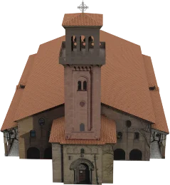
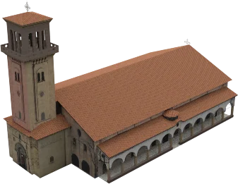
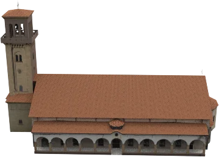
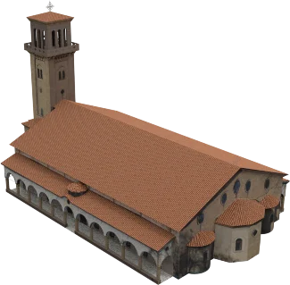
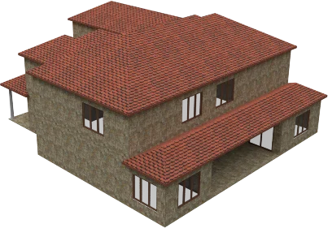

Image-Based 3D Reconstruction of Building Models
Supervised by Dr. Melinos Averkiou and Dr. Marios Loizou
Can a single feed-forward network rebuild a whole building from a handful of photos? I applied VGGT (Visual Geometry Grounded Transformer) and its successor VGGT-Ω, which predict camera parameters, depth maps, point maps and point tracks in one pass, to architectural 3D reconstruction.
- Prepared the BuildingNet dataset (1,850 models across religious, commercial, public and residential buildings) and rendered multi-view image sets as reconstruction input.
- Aligned each predicted reconstruction to a common reference frame so it could be compared with the ground-truth geometry.
- Benchmarked VGGT against VGGT-Ω on accuracy, completeness and overall reconstruction quality.
Input · multi-view renderings




Output · 3D geometry

| Model | Accuracy | Completeness | Overall |
|---|---|---|---|
| VGGT (point head) | 0.0089 | 0.0113 | 0.0101 |
| VGGT (depth + camera) | 0.0038 | 0.0058 | 0.0048 |
| VGGT-Ω | 0.0052 | 0.0043 | 0.0047 |